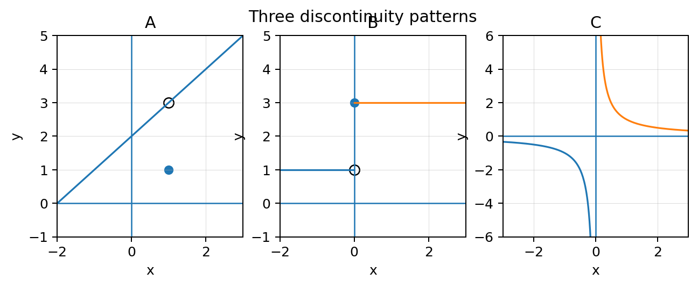

Continuity at a point is a three-part agreement between value, limit, and equality.
Section Introduction
Continuity is a condition you can verify
A graph looks continuous when it can be traced through a point without a break, but calculus needs a precise test. At \(x=a\), three statements must line up: the function value exists, the two-sided limit exists, and the limit equals the function value.
When one of those pieces fails, the type of failure helps classify the discontinuity. A removable discontinuity has a finite two-sided limit but a missing or mismatched point value. A jump has unequal one-sided limits. Infinite behavior creates another kind of discontinuity.
Piecewise functions are especially important because the rule can change at a boundary. That boundary is where left, right, and assigned value must be checked carefully.
Do not say “continuous” until you can name the conditions that make it true.
Vocabulary / Key Notation Preview
continuity · discontinuity · piecewise function · removable discontinuity · jump discontinuity
Sort the vocabulary. Write each vocabulary word in the column that best matches what you know right now. You may move a word later.
| Know for sure | Recognize | Don't know yet |
|---|---|---|
Section Preview
Skim before close reading. Look at the headings, tables, graphs, and examples. Find 1–2 things you notice and 1–2 things you wonder about.
| What I noticed | |
|---|---|
| What I wonder |
Close Reading Directions
READ IN SHORT CHUNKS. Annotate the words and visuals together. Underline evidence, circle or highlight bold vocabulary, label arrows or important features, connect sentences to tables and graphs, and jot short questions or connections in the margins. Use these directions through the What's To Come section and the reading that follows.
What's To Come
PREVIEW / DECOMPOSE. Use the connected parts to see where this section is headed. Annotate the representations and prompts as you work.
Let \(f(x)=\begin{cases}kx-1,&x<3\\11,&x\ge3\end{cases}\). Use this one piecewise function for Parts A–D.
Part A
Write the left-hand limit at \(x=3\) in terms of \(k\).
Part B
State the right-hand limit and the function value \(f(3)\).
Part C
Find \(k\) so that \(f\) is continuous at \(x=3\).
Part D
If \(k=3\), classify the discontinuity at \(x=3\) and justify your classification.
I Can 1I can analyze continuity at a point and on intervals, and classify discontinuities using limits, function values, and piecewise definitions.
A function is continuous at \(x=a\) when three conditions hold: \(f(a)\) exists, \(\lim_{x\to a}f(x)\) exists, and \(\lim_{x\to a}f(x)=f(a)\).
A removable discontinuity occurs when the two-sided limit exists but the point is missing or assigned a different value. A jump discontinuity occurs when the left-hand and right-hand limits are finite but unequal. Infinite or oscillating behavior can also prevent continuity.
On an interval, continuity means the condition holds at every interior point. On a closed interval, the appropriate one-sided continuity is used at the endpoints.
- Does \(f(a)\) exist?
- Does \(\lim_{x\to a}f(x)\) exist?
- Does the limit equal \(f(a)\)?

Classify the failure by identifying which part of the continuity test breaks.
Example 1: Classify from a formula
Let \(g(x)=\frac{x^2-4}{x-2}\) for \(x\ne2\), and \(g(2)=7\). Determine whether \(g\) is continuous at 2. If not, classify the discontinuity.
You Try It 1: Classify a jump
Let \(h(x)=1\) for \(x<0\) and \(h(x)=4\) for \(x\ge0\). Determine continuity at 0 and classify any discontinuity.
Stop and Discuss
- What are the three requirements for continuity at a point?
- How does a removable discontinuity differ from a jump?
- Why is “the graph has a point there” not enough to prove continuity?
I Can 2I can determine parameter values that make a piecewise function continuous.
To make a piecewise function continuous at a boundary, the pieces must meet at the same output. If the right-hand piece includes the boundary, its assigned value often gives the target that the left-hand expression must approach.
Write the one-sided limits using the correct piece. Then set the needed quantities equal. The parameter equation comes from the continuity condition; it should not be guessed from the appearance of the formulas.
After solving for the parameter, check the resulting value from both sides and the function value. This verifies that the repair actually creates continuity.
- Identify the boundary \(x=a\).
- Compute the left-hand limit from the left piece.
- Compute the right-hand limit from the right piece.
- Use the included piece to identify \(f(a)\).
- Set the required values equal and solve the parameter.
- Check all three continuity conditions.
Example 2: Choose a parameter for continuity
Let \(p(x)=\begin{cases}mx+2,&x<4\\18,&x\ge4\end{cases}\). Find \(m\) so \(p\) is continuous at \(x=4\).
You Try It 2: Match two nonconstant pieces
Let \(q(x)=\begin{cases}2x+b,&x<1\\5x-1,&x\ge1\end{cases}\). Find \(b\) so \(q\) is continuous at \(x=1\).
Stop and Discuss
- What equality creates the parameter equation at a piecewise boundary?
- Why should you check the result after solving for the parameter?
I Can 3I can justify a discontinuity classification from multiple representations.
A discontinuity classification should be justified with evidence, not a label alone. A graph can show open circles, jumps, or unbounded behavior. A table can show one-sided numerical trends. A formula can show a canceled factor or different piecewise rules.
Multiple representations are especially useful when one display is ambiguous. For example, a graph may suggest a hole, while a simplified algebraic form explains why the nearby limit exists. A table can confirm that both sides approach the same output.
In AP-style reasoning, state the relevant limit or one-sided limits and the function value when needed. Then connect those facts to the classification.
Removable evidence
Finite matching one-sided limits, but \(f(a)\) is missing or different.
Jump evidence
Finite one-sided limits exist but are unequal.
Infinite evidence
At least one side grows without bound near the target.
Continuity evidence
Function value exists, two-sided limit exists, and they are equal.
Example 3: Justify from a graph and table
A graph shows an open circle at \((2,5)\) and a filled point at \((2,1)\). A table from both sides shows outputs 4.9, 4.99, 5.01, and 5.1. Classify the discontinuity at 2 and justify with both representations.
You Try It 3: Justify a jump from two representations
A piecewise graph approaches \(y=-2\) from the left and \(y=3\) from the right at \(x=0\). A table confirms values near -2 on the left and near 3 on the right. Classify and justify.
Stop and Discuss
- What evidence is enough to justify a removable discontinuity?
- What evidence is enough to justify a jump?
- Why is a classification label without limit evidence incomplete?
Vocabulary Reference
| Term | Meaning in this section |
|---|---|
| continuity | At a point, the function value exists, the two-sided limit exists, and the two are equal. |
| discontinuity | A point or behavior where the continuity conditions fail. |
| piecewise function | A function defined by different formulas on different parts of its domain. |
| removable discontinuity | A discontinuity with a finite two-sided limit but a missing or mismatched point value. |
| jump discontinuity | A discontinuity where finite one-sided limits exist but are unequal. |
Section Summary
- Continuity at a point requires value, limit, and equality.
- Piecewise boundaries require careful left-hand, right-hand, and function-value checks.
- Parameters for continuity come from setting required boundary values equal.
- Discontinuity classifications should be justified with explicit limit evidence.
What I Understand Now
Create a short continuity checklist you could use on an AP free-response problem. Then write one sentence distinguishing a removable discontinuity from a jump discontinuity.
Common Mistakes to Watch
| Mistake | What to remember |
|---|---|
| Checking only whether \(f(a)\) exists. | Continuity requires three conditions, not one. |
| Calling every hole or break a jump. | Use one-sided limits to distinguish removable, jump, and infinite behavior. |
| Using the wrong piece at a piecewise boundary. | Match left/right approach to the correct formula and note which piece includes the boundary. |
| Naming a theorem/condition without evidence. | State the relevant function value and limit facts that justify the conclusion. |